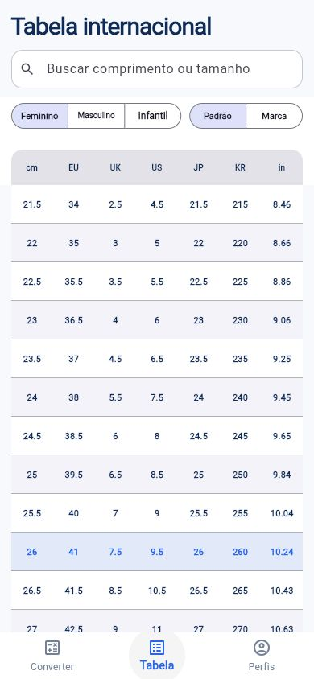

WEB + WINDOWSx.dd-oss.com东东下载 / 网页版 01 / MEDIA东东下载X / Twitter 下载器贴上公开帖子的链接，保存视频、图片和动图。需要音频，也可以转成 MP3。视频画质可选，多张图片可打包网页直接用，Windows 独立运行免费使用，无需注册视频 / 图片 / GIF / MP330 种语言在线使用 查看源码
STRIDEMETRIC / FLUTTER换算 / 尺码表 / 个人档案 02 / EVERYDAYStrideMetric鞋码换算知道脚长或现有鞋码，就能对照不同地区的尺码。常穿品牌和家人的尺寸，也能各自保存。EU、UK、US、JP、KR 等尺码换算品牌尺码参考与本地个人档案离线换算，支持 13 种语言FlutterAndroid / Web查看项目 运行说明